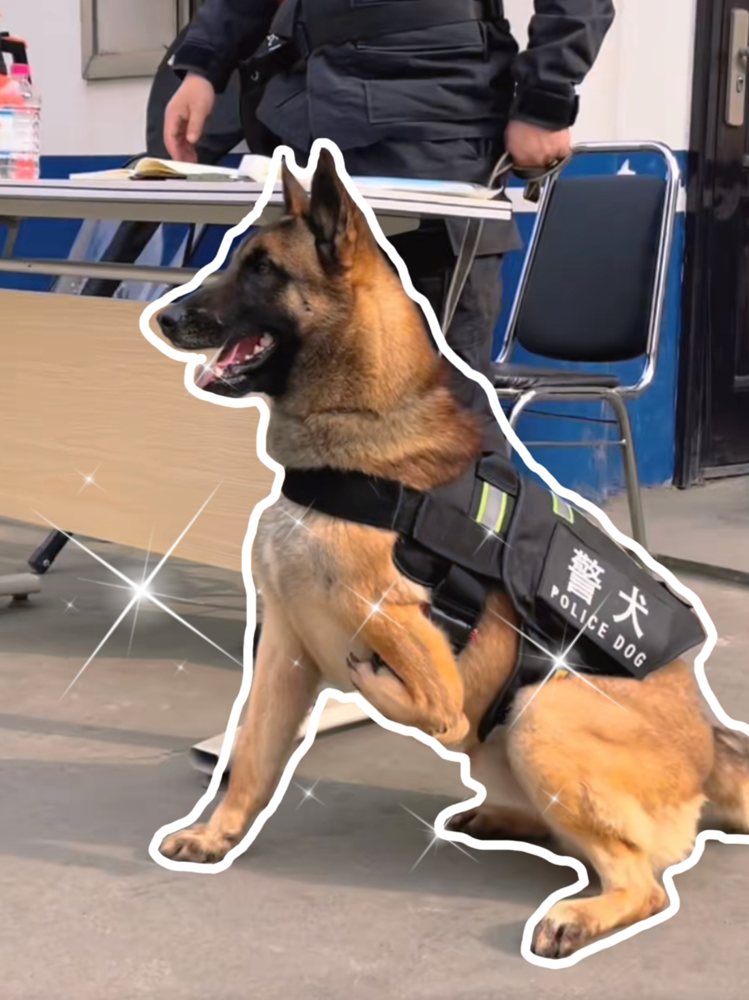

一条狗的使命
"Have fun, obviously. Whenever possible, find someone to save, and save them.
Just be here now. Go! That's a dog's purpose."
查看视频
你好！我是巴顿！一只用三条腿奔跑的警犬~
我出生于淅川特警队，父母都是警队中优秀的警犬，不出意外的话，我原本会继承父母的衣钵，继续成为一名优秀的警犬，然而尽管我出生时个头最大，资质最好，但却因为左前腿先天残疾，不具备警用品质。
在医生的诊断下，我一度差点被安乐死，但警队的特警哥哥们不忍心看到我就这样离去，为我安排了领养家庭，可我不甘心做一只普通的家养犬，在经历了重重困难后我成功重返警队。
但似乎所有人都不相信我的实力，看着兄弟姐妹们接受着严格的训练，我露出羡慕的神情，渴望训导员能给我一个机会。皇天不负有心犬，在训导员的努力之下，我逐渐适应警队的训练，性格也慢慢变得温和坚毅。
但光有一颗想当警犬的心还远远不够，我的速度总是相对落后，也常常重心不稳，在训练和实战中摔倒负伤对我来说已经司空见惯，我也早已习惯在跌倒后重新爬起来战斗。
为了让我的晚年生活质量好一点，训导员提前帮我适应假肢辅助前行，虽然很辛苦但我感到十分幸福，因为这都是警队家人们对我的爱。
希望我的故事能给你开始一切的勇气，我是巴顿~
查看视频
你好！我是闪电！一只只有半张脸的警犬~
我出生于警犬世家，拥有优良的血统，我的父母都战功累累，是成绩显著的功勋犬。为了追随父母的脚步，我从出生便成为了警犬基地的一员。
经历了从小日复一日的训练，我在基地进行警犬考核时，各项指标都达到了优级，甚至其中几项还突破了警犬学校的记录。至此我正式从警犬学校毕业，成为一名光荣的警犬。
在警局服役期间，我参与过多起缉毒案件，凭借灵敏的嗅觉和勇猛的战斗精神迅速制服毒贩，除此之外，我也很擅长搜寻嫌疑人。
但是危险和意外总在不经意间发生，一次行动中，我为了解救被拐儿童，与人贩子殊死搏斗，被铁锹砍掉了半张脸，造成了严重的额骨损伤，但我仍没有松口，最终解救了十五名被拐儿童。在经历了十几个小时的手术之后我幸存了下来。
然而失去了半张脸，我很难张开口去吃饭，医生拔掉了我的部分牙齿，我才能够顺利进食。在医治和修复的时间里，我伤心过、痛苦过，但始终没有绝望，因为我知道有很多人在爱着我，在积极地帮助我。
希望我的故事能给你坚持一切的力量，我是闪电~
查看视频
你好！我是沈虎！是一只与时间赛跑的搜救犬~
我从小在沈阳警犬基地长大，十个月的时候就被分配到南京消防支队上岗工作，成为一名光荣的搜救犬。其实我还有一个可爱的小名叫小黑，是我的训导员给我起的。
八级大地震的天灾席卷着无数生灵，那时候我刚成年没多久，凭借优秀的过往救援成绩、充沛的体力和敏锐的嗅觉成功加入了南京救援组，跟随训导员第一时间赶往灾区参与救援，
为了发现更多的生命痕迹，我在坍塌的废墟中不断奔跑、定位，裸露的钢筋砂石不时划破我的腹部和后腿，可我全部身心都在争分夺秒地跟死神赛跑。
在长达十四天的救援中，我成功解救了十五名深埋在废墟底下的受伤群众。由于吸入巨量粉尘，加上巨大的运动量和缺水导致了尿结石和呼吸困难等疾病，被钢筋、瓦片划得遍体鳞伤，我直接暴瘦十几斤，休养了好几年才慢慢恢复健康。
两年后我有了新的战友，也是他给我起了沈虎这个名字，我们不仅多次完成上级分配的救援任务，更是在南京支队几次军犬比赛中斩获多个奖项。
希望我的故事能给你相信一切的真心，我是沈虎~
告诉世界我来过
"The distance between life and death, for a dog, it cannot fathom.
It’s life as a water passage, one point one year after year in bluestone station."
轻触小狗有惊喜！
素材来源：madouzi
一千零一只
"As a dog, it has its principles, never abandon, regardless of sickness and death.
Waiting for the silent witness to their most sincere, the most pure love, also deeply touched by people."
忠犬
2022-02-18 美国
剧情讲述美国陆军游骑兵布里格(查宁·塔图姆 饰)的任务是将比利时牧羊军犬露露从路易斯–麦克乔德联合基地沿太平洋海岸及时带到亚利桑那州诺加里斯，以便及时参加露露训导员的葬礼，一路上人狗间培养出了深刻的友谊。
野性的呼唤
1935-08-09 美国
养尊处优的巴克被卖到了严寒的阿拉斯加，成为了雪橇犬，它辗转经历了好几个残暴冷酷的主人后，遇到了约翰（克拉克·盖博饰），约翰治好了它伤痕累累的身体，
一人一狗之间产生了坚实的友谊。然而在一场意外中，约翰被印第安人杀死了，愤怒的巴克失去了理智，它要为自己的主人报仇。
义犬救主
2022-03-17 美国
州警察丹（格兰特·古斯汀饰）梦想加入K-9搜救队，却苦于得不到机会。收容所犬露比梦想有一个家，却看不到希望。当命运让丹和露比相遇，一人一犬之间的深厚羁绊将帮助这对搭档应对迄今为止最艰巨的挑战。根据真实故事改编。
导盲犬小Q
2004-03-13 日本
一只可爱的拉布拉多犬被选去接受导盲犬的培训，并寄养在一对夫妇的家里。训练十分艰苦，但小Q还是成为了导盲犬，
认识了第一位主人渡边先生，不久渡边先生病倒了，小Q只好回到了训练中心。小Q已经在训练中心度过了7年，这时它又能回到了“养父母”的家了，可是它却患病了……
消防犬
2007-04-04 美国
小狗雷克斯是一条家喻户晓的明星犬，在一次拍摄中雷克斯不慎从几千米的高空坠落，而它的同伴都认为它必死无疑。事实上，雷克斯幸运地落在一辆拉载番茄的卡车上，几经辗转来到了小男孩谢恩·费伊的家中，
雷克斯的到来使费伊热闹了几分。不久，雷克斯的才能被人发现，它成为一条名副其实的消防犬。
多哥
2019-12-20 美国
诺姆市爆发白喉，由于疫苗在港口关闭前未能送达，卫生局决定使用两组雪橇犬接力运输，经过河流，跨过平原，穿过森林，穿越冰冻的阿拉斯加邮路。
最近的疫苗所在地为南纳，距离诺姆市1085公里，一般情况下狗拉雪橇需要费时25日，而他们只花了5天半就成功完成接力，拯救了多名孩子的性命。
战犬瑞克斯
2017-06-09 美国
改编自真人真事，以伊拉克战争为背景，讲诉海军陆战队下士梅根·利维和她的军犬瑞克斯一起拯救了多人生命的故事。在经历生死与相互救赎后，一人一犬建立深厚情感的故事。
该片首次全面展现军犬在战区排爆、救人的惊心动魄的画面，真实刻画了女兵梅根·利维与军犬瑞克斯在战场上紧张、勇猛的状态。
灵犬莱西
1943-10-07 美国
英国约克郡，大萧条时期。山姆·盖克劳（唐纳德·克里斯普饰）一家家境贫困，唯一值钱的东西只有一条聪明的牧羊犬莱西。莱西是小儿子乔的好伙伴，然而迫于生计山姆还是将莱西卖给了富有的公爵，深深思念主人的莱西几次出逃。在遥远的苏格兰，莱西开始了返回真正主人之家的旅程。
雪地黄金犬
1991-01-18 美国
为了完成父亲的遗愿，杰克（伊桑·霍克饰）只身来到阿拉斯加寻找金矿，一只名叫白牙的阿拉斯加雪橇犬改变了杰克的命运，将他从死亡线上挽救了回来，而当白牙被赌狗的恶棍们当成摇钱树之时，杰克也毫不犹豫的对其伸出援手。
白牙靠着自己的天赋帮助杰克找到了金矿，当杰克受邀回纽约创业时，面对依依不舍的白牙，杰克犹豫了。
了不起的它
2022-01-10 中国
纪录片第一季与沈阳铁路公安处警犬队深度合作。节目聚焦12只性格迥异，身兼搜爆、巡逻、护卫职责的警犬与训导员们共同成长的温馨故事，解锁警犬的可爱另一面，打造系列生动的“警务汪打工日记”。
小狗侦探
2018-11-05 英国
来认识下打击犯罪世界中的无名英雄!从能够嗅探毒品或爆炸物的西班牙猎狗到可以追踪犯罪嫌疑人的德国牧羊犬,警犬每年在英国帮助解决三十万起犯罪案件。他们的主要武器是鼻子,其敏感度大约是人类的一万倍，这意味着这些警犬十字军可以执行一系列惊人的任务，从而找到毒品、炸弹和枪支的藏身之处，并且用人类最细微的气味来鉴定关键证据。
离不开你
2021-09-16 中国
该片聚焦人与宠物之间的每一次离别，讲述了人与宠物密不可分的故事。当生、老、病、死这些无法避免的生命定律出现，当成长、离家、意外、永别这些对人来说也尤为重要的命运时刻到来，人与宠物伙伴之间的情意显得尤其诚挚、深刻而动人。与此同时，也呈现出人性和社会的复杂丰富，探讨我们如何更好地生活在这个世界上。
没有汪（忘）
"It's your dog, but you are it's all.
They taught me the meaning of loyalty that you should never forget anyone that you loved."

remove
add
repeat
favorite
volume_up
人类呀 爱我吧
我们也当过警察 把坏人绳之以法
任劳任怨不图报答
我们在海关检查 我们也是探险家
山高水深不在话下
爱让世界变得美好 爱让生命长大
爱让世界充满欢笑 让天下是一家
人类呀 爱我吧
请给我们一个家 我是你最忠诚的朋友啊
人类呀 爱我吧
虽然我的个子大 我保证我最听话
人类呀 爱我吧
不要将我们屠杀 没有我你不觉得孤单吗
人类呀 爱我吧
地球也是我的家 是我们共同的家
我是你最忠诚的朋友啊